Vanderbilt · Learning Series · ATD facilitator guide · print edition
Admin, Automated, the facilitator guide

Run of show
| Screen | Full (min) | Core (min) |
|---|---|---|
| Welcome / QR | 3 | 2 |
| Objectives | 2 | 1 |
| The Chancellor's charge | 3 | <1 |
| Agenda | 1 | skip |
| 01 · The repeat tax | 9 | 6 |
| Manifesto | 1 | skip |
| 02 · Spot it | 12 | 8 |
| 03 · Template it | 11 | 8 |
| 04 · Route it | 12 | 7 |
| 05 · The Automation Lab | 14 | 10 |
| 06 · Retire it and bank it | 10 | 7 |
| Recap quiz | 4 | 4 |
| Capstone · My automation card | 6 | 6 |
| Glossary | 1 | skip |
| Closing · commitment | 4 | 1 |
| Total | 93 | 60 |
Audience
All Vanderbilt staff who live in email, calendars, and recurring reports: coordinators, administrators, analysts, program staff, and anyone whose week has a repetitive layer. 8 to 30 works well; every exercise runs on individual work, so it scales up easily. Start Smarter is the assumed foundation: learners know what a prompt is, and the traffic-light data rule is restated here, never introduced.
Room setup
Projector plus presenter device; learners on their own devices via the Welcome-slide QR; any seating works, though pairs need to be able to turn toward each other. A whiteboard or flip chart for the candidate list in section 02 and the keep-shrink-retire calls in section 06. Virtual: breakouts of 2 for the pair drills. Set the norm in the first minute: your tasks and templates, never other people's names, and nothing typed is saved or sent.
Materials
- Projector or large display and the facilitator link open (this edition)
- Facilitator laptop with arrow keys or clicker; all notifications off
- Learner devices (BYOD) joining via the welcome-slide QR
- A few printed cheat sheets (cheatsheet.html) for anyone without a device
- Printed repeat audit cards (worksheet.html) as the no-device and projector-failure fallback
- Whiteboard or flip chart with markers for the candidate list and the keep-shrink-retire calls
- Sticky notes for the section 02 candidate swap (one task per note works well)
A week before
- Read this guide end to end, then run BOTH editions start to finish, doing every exercise, including the recurrence inventory on your own real week. You will be asked what you automated first; a real answer plays far better than a hypothetical.
- Actually build one template from three of your own past emails before you teach. The build takes ten minutes and gives you a live example to describe, structure only, never contents.
- Send the pre-work invite (template on this page) with the calendar invite: notice one task this week you have done more than twice the same way.
- Decide your path now: Full (90-minute slot) or Core (60). Mark which pair drills you keep versus run solo.
- Skim Gallup's workplace AI research page so the numbers in Guess the Number are fresh; the game's reveals carry the citations, but you should be able to say 'the research' with a straight face.
The day before
- Test the projector with the facilitator link; confirm the notes rail is readable from where you'll stand.
- Scan the welcome QR from the back of the room with your own phone; it must land on the learner edition.
- Run one full round of the Automation Lab and one trainer so you can drive them without looking.
- Print 5 to 10 cheat sheets and repeat audit cards, and stock the sticky notes.
- Re-read the tough-questions bank; say the 'is this how jobs get cut?' response out loud once. In a staff room, that question is coming.
30 minutes before
- Welcome slide up as people arrive; it does the enrolling for you.
- Close every other tab and app; silence the machine.
- Test arrow-key navigation and one interaction (run a Guess the Number round, open the lab).
- Write 'YOUR TASKS, NEVER NAMES' where the room can see it all session.
- Write the four moves on the whiteboard: SPOT, TEMPLATE, ROUTE, RETIRE. You'll point at them all session.
When things go sideways
If Projector or the site fails mid-session: Teach from the whiteboard: the four moves, the three piles, and the template hygiene rules all draw in seconds. The inventory and capstone move to the printed cards. The lab becomes a group walk-through: read each step's three options aloud and have the room vote by hands.
If Learner devices can't join (wifi or filters): Run facilitator-only: the trainers play well on the projector with the room voting A/B/C by hands; the private inventory and capstone move to paper. You lose typing, not learning.
If You're 10+ minutes behind by the Automation Lab (05): Declare the Core path silently: pair drills become solo passes, debriefs shrink to one voice, and the closing tightens to the fist-to-five plus commitment round. Never cut the lab, the inventory, or the capstone; they carry the session's practice objectives.
If Someone types or reads out a message containing a real person's details: Protect the norm warmly: 'Hold on, swap that name for a bracket before it goes anywhere.' Then use it as the live teach: that swap IS slot hygiene, and it is the same move that keeps people data out of AI tools. The interruption becomes the lesson.
If The room is skeptical: 'AI drafts sound robotic, my messages need a human touch': Agree with the instinct and redirect it: the template is YOUR past writing, distilled; AI just finds the skeleton in it. The voice rule exists for exactly this concern, and the Judge the Template game's too-generic examples show what happens when voice is ignored. The human touch survives in the slots you fill and the read before every send.
If The room is the opposite: automation enthusiasts who want to auto-send everything today: Aim the enthusiasm at the lab and let it do the sobering: the auto-send option produces the month-two disaster on screen. Then hold the line verbally: read-then-send has no exceptions, and the evaporation trap catches enthusiasts hardest because they save the most hours and name none of them.
If Someone raises a real data-privacy concern mid-flight: Stop and honor it; this is the one interruption that outranks the agenda. Restate the traffic light (green public, yellow internal in approved VU tools only, red private information about people, never), confirm their case against it, and if it's genuinely ambiguous, park it with a promise to route it to the right owner rather than improvising policy from the front of the room.
If A learner says 'my whole job is the repetitive layer, is this course automating me away?': Take it seriously and answer honestly, in front of the room if they asked in front of the room: the course automates formats, never judgment, and every exercise ends with a human reading, deciding, and sending. The bank exists precisely so recovered hours become visible higher-value work with the learner's name on it. Then offer the private follow-up; this worry usually has a specific story behind it.
Tough questions, ready answers
Q: Is this how our jobs get cut? Be honest.
The honest answer has two parts. This course moves formats to machines and keeps every decision, every send, and every relationship with the person doing the work; the bank exists so the recovered hours turn into visible, higher-value work with your name on it, which is the opposite of making you disposable. And nobody teaching a 90-minute course can promise what any organization decides years from now. What you control is whether your recovered time becomes named, visible contribution or invisible slack. The first kind builds the case for you; this course is the first kind.
Q: My messages are all different. I don't really have repeats.
That is what almost everyone says before the audit, and the sent folder almost always disagrees. The repeats hide because they arrive one at a time and each one feels like a fresh task. Run the one-week noticing habit, or just scroll yesterday's sent mail and count the messages you have written before in near-identical form. If the count is genuinely zero, congratulations, you have already escaped the repeat tax, and the calendar rules and retirement test still apply to you.
Q: Doesn't reading every AI draft cancel out the time saved?
Reading is fast; composing is slow. A routine reply that took four minutes to write takes thirty seconds to read and correct, and the template did the composing. The math only breaks when the draft is bad enough to need a full rewrite, which is the too-generic template failure, and the fix is a better skeleton, never skipping the read. The read is also carrying your accountability: five minutes a month at the send step is what stood between the lab's strong tier and the auto-sent disaster.
Q: Am I allowed to put my work email into AI tools?
The traffic light answers it: internal work belongs in approved VU tools only (ChatGPT EDU, Amplify, Copilot), and private information about people belongs in no AI tool at all, ever. In practice: de-identified drafts and templates of your own messages are fine in approved tools; a thread containing a student's situation or a colleague's personnel matter is red, and you handle it yourself. When you are unsure which side of the line something is on, treat it as red and ask the data governance owner, not the tool.
Q: What if I automate something and it makes a mistake?
Plan for it, because it will, occasionally, which is exactly why the system keeps your eyes at the send step. Under read-then-send, a mistake in a draft costs you a correction; the same mistake under auto-send costs you a public error with your name on it. So the answer is the design: slots so nothing stale carries over, a read before every send, and a spot check on the numbers that change. Notice the symmetry nobody mentions: your hand-built versions had mistakes too. The template plus the read usually produces fewer.
Q: My manager measures me by the reports I produce. Retiring one sounds career-limiting.
Which is why the test retirement puts the manager in the loop before anything stops; you are proposing an experiment together, never presenting a fait accompli. The two-sentence ask ('I suspect nobody reads this; can we skip one cycle and see?') makes you look like someone who thinks about value, and the outcome is evidence either way: nobody notices and you both recover the hours, or someone notices and you have found the real audience and can shrink the report to what they actually use. Managers overwhelmingly say yes to the version framed as a test.
Copy-paste templates
Pre-work invite (paste into the calendar invite)
Subject: Before our Admin, Automated session. One thing to do this week: notice one task you have done more than twice the same way. A message you keep retyping, a table you keep rebuilding, a question you keep answering. Just notice it and remember roughly how many minutes it takes each time. You will never be asked to share its contents, and everything you type in the session stays on your screen. That's it, no reading, no tools to install.
7-day pulse (send one week after)
Subject: One week later, did the build session happen? Three quick lines, reply whenever: 1) Did you run the 20-minute build session from your automation card? 2) What did you template, route, or retire? 3) Where did the recovered time actually go, and is it on your calendar? Replies come to me only. Not yet? The card still works; this note is your nudge.
30-day re-poll (send a month after)
Subject: Thirty days of automated admin. Two questions, same scale as the room: 1) Fist to five, how confident are you now running templates, triage, and calendar rules on your own work? 2) What does your chosen task cost now, and is the banked hour still yours or did the meetings find it? Reply with a number and a line. The before-and-after pair is how we know this session did more than feel good.
After the session
Seven days out, send the pulse: 'Did the 20-minute build session happen? What did you template, route, or retire? Where did the recovered time actually go?' At 30 days, send the re-poll: the same fist-to-five confidence question from the close, plus 'what does the task cost now, and is the banked hour still yours?' The count of build sessions actually held is the program's headline Level 3 metric.
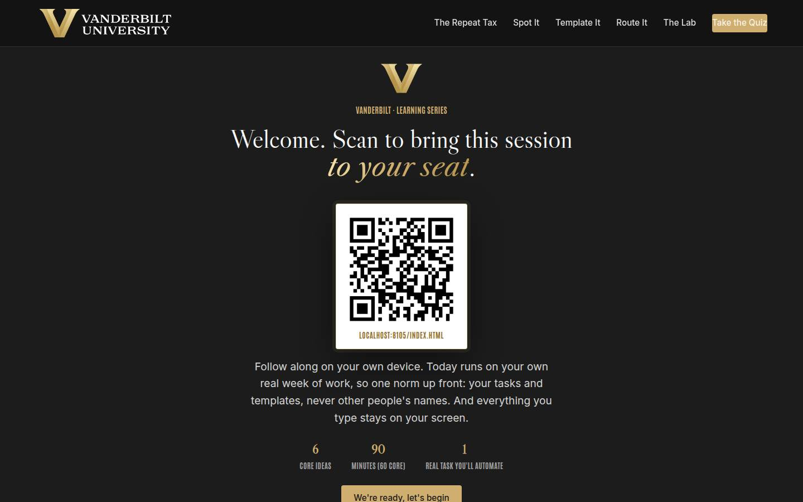
Welcome / QR Full 3 min · Core 2
Get every learner into the experience on their own device and set the norm that makes real-work material safe: your tasks and templates, never other people's names, and nothing typed leaves the screen.
Say
“Welcome. Point your camera at that code before we start. Today is about the least glamorous and best-evidenced thing AI does: taking the repetitive layer of your week off your hands. We'll work on your own real tasks, so one ground rule for the next ninety minutes: your tasks and templates, never other people's names. And everything you type today stays on your screen; nothing is saved or sent anywhere.”
Do
- Have this slide projected as people arrive.
- Point at the QR and get phones up before you say anything else.
- Set the norm explicitly and early: your own tasks and templates, never other people's names; typed exercises stay on their screens.
- Confirm by show of hands that most of the room has the site open before advancing.
Ask
“Quick calibration, shout it out: how many of you sent an email this week that you have sent, in nearly the same words, at least ten times before?”
Expect:
- Most hands up, with laughter
- Someone names theirs immediately: the reimbursement answer, the room confirmation
- A few holdouts who 'don't have repeats' (the audit will find them)
Respond: Name the pattern warmly: 'Every one of those hands is holding a template that hasn't been built yet. Ninety minutes from now, one of them will be.'
Validate: 80%+ of the room has the deck open on a device; the room can repeat the 'your tasks, never names' norm back to you.
Watch for: People bracing for either a tech tutorial or an AI sales pitch. The frame that relaxes both: today is about getting hours back from the boring layer of the week, and AI is just one of the tools.
Transition: “Here's exactly what you'll walk out able to do.”
Core path: Core: one scan prompt, the norm stated once, move on.
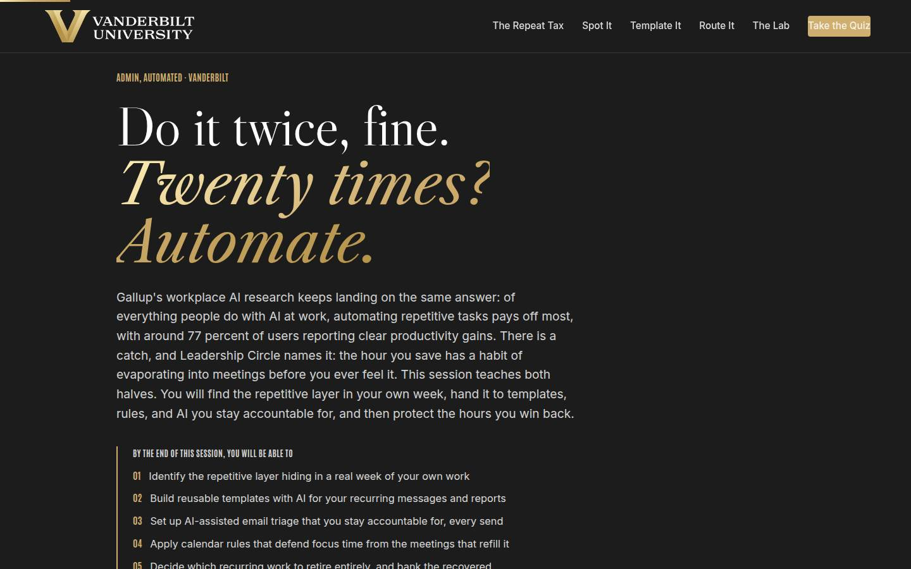
Objectives Full 2 min · Core 1
Set the contract: five capabilities, ending in one real task carded for automation with a dated 20-minute build session.
Say
“Five things by the end. You'll be able to find the repetitive layer in your own week, because it hides. You'll build reusable templates with AI from your own past messages and reports. You'll set up email triage where AI drafts and you stay accountable for every send. You'll put calendar rules in place that defend the time you recover. And you'll make the bravest call in the course: what recurring work should simply stop. It all lands in one artifact: an automation card for a task you actually do, with a date on it.”
Do
- Read the five objectives briskly, in plain language.
- Land on the last one: this session ends with a REAL automation card, one task, one move, one date.
- Name the sources once for credibility: Gallup for the payoff evidence, Leadership Circle for the evaporation warning.
Validate: Learners can say what the capstone will be (one task, one move, one dated build session).
Watch for: Tool questions arriving early ('which AI should we use?'). Park them: the moves work in any approved tool, and the traffic light in section 02 answers the which-tool question properly.
Transition: “One page before the plan: why the university needs those hours back as much as you do.”
Core path: Core: objectives 1 and 5 out loud; the rest on screen.
The Chancellor's charge Full 3 min · Core <1
Connect the course to the institutional vision: the university's speed is the sum of its staff hours, and automating the repetitive layer is how those hours come back.
Say
“Before the plan, the why. Chancellor Diermeier's vision is one sentence with no hedge in it: Vanderbilt will define the great university of the 21st Century and be it. The how is uncommon speed, agility, and scale, and here is the desk-level truth: an institution's speed is the sum of its staff hours, and the repeat tax is quietly spending yours. Automating the twentieth repeat, while you stay accountable for every send, is how a university this ambitious gets its operational capacity back. Our motto is the dare, Crescere aude, dare to grow, and the hour you reclaim this week is the room you grow in.”
Do
- Read the vision sentence off the slide, slowly; it carries the page.
- Walk the three focus cards, landing on the 'At your desk' line in each.
- Point at the flywheel card: recovered hours, banked where they show, are the flywheel's rawest input.
- Keep it under three minutes; this page frames the session, and the sections do the teaching.
Validate: The room can connect the vision to the course in one line: the university's speed is made of reclaimed staff hours like theirs.
Watch for: Eye-rolls at strategy language. Ground it fast: the flywheel's inputs are decided at desks like theirs, one retired repeat at a time.
Transition: “Six ideas, in a deliberate order.”
Core path: Core: under a minute. Read the vision sentence, gesture at the three focus cards, move on.
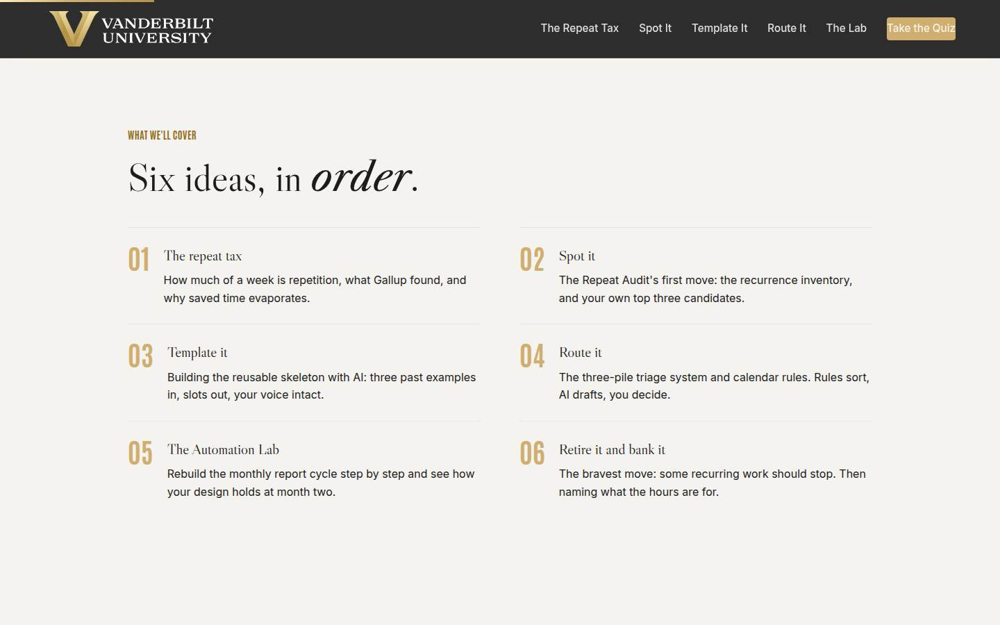
Agenda Full 1 min · Core skip
Show the arc once so learners can place each tool as it arrives: evidence, then the four moves of the Repeat Audit, practiced in the lab, protected by the bank.
Say
“The arc is simple: first the evidence, then the Repeat Audit's four moves in order. Spot the repeats, template them, route what arrives, and, the brave one, retire what nobody needs. In the middle you'll rebuild a monthly report cycle in the lab and watch your design survive month two, or not. We end with the card that puts a date on your first move.”
Do
- Walk the six items in one breath each.
- Point out the shape: the case (01), then the audit's four moves (02 spot, 03 template, 04 route, 06 retire), with the lab (05) as the practice run.
Validate: None needed; this is orientation.
Watch for: Don't teach here; every concept has its own slide.
Transition: “Start with the evidence, because the numbers are better than most people expect, and the trap is worse.”
Core path: Core: skip entirely; the deck's structure carries it.
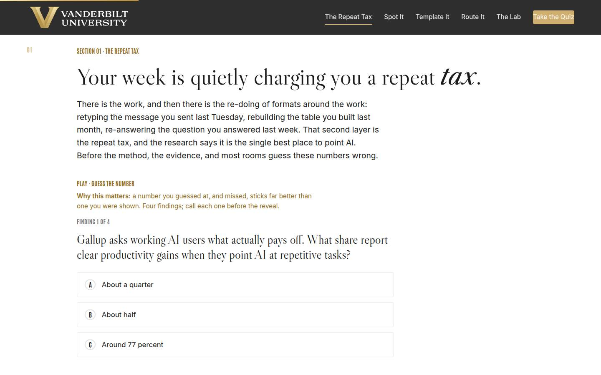
01 · The repeat tax Full 9 min · Core 6
Establish with guessed-at, missed numbers that repetitive admin is the highest-payoff AI use case (Gallup, around 77 percent) and that saved time evaporates unless banked (Leadership Circle). The tension between those two findings is the whole course.
Say
“There are two layers in your week. There's the work: the judgment, the relationships, the things that need you. And there's the re-doing of formats around the work: retyping the message you sent last Tuesday, rebuilding last month's table, answering the same question for the twelfth time. That second layer is the repeat tax. Gallup's workplace research says pointing AI at exactly that layer is the single highest-payoff use, with around 77 percent of users reporting real productivity gains. And Leadership Circle adds the warning that shapes the whole back half of today: the hour you save will evaporate into meetings unless you deliberately name where it goes. Four findings, call your number before each reveal.”
Do
- Frame the distinction first: doing the work versus re-doing formats around the work. The tax is the second one.
- Frame the game: four findings, guess each number before it's revealed. Missed guesses are the point; they stick.
- Run Guess the Number on devices, or as a room vote on the projector; call for guesses out loud before each reveal.
- After the reveal round, land the two-sided frame: the payoff is real AND the saved time evaporates. Both findings run the session.
- Run the quick check (what happens to saved hours), then the pair activity: name and price one repeat out loud.
Ask
“Name your biggest repeat and price it: minutes per repeat, times repeats per month. Who's over an hour a month on a single repeat?”
Expect:
- Most of the room over an hour, several over three
- The classics: status reports, scheduling threads, the same policy answer
- Someone realizes their repeat is daily and does the math out loud, alarmed
Respond: For the alarmed one, warmly: 'That number is your best news of the day; the biggest tax means the biggest refund. Hold onto that task, it's your capstone candidate.'
Debrief: The payoff is real, the trap is real, and both are now priced in this room's own numbers. The difference between winning the hour and losing it again is design, which is what the four moves are for.
Validate: Quick check correct; the priced repeats land audibly and the room hears its own tax. Most learners can state both findings: the 77 percent and the evaporation.
Watch for: A skeptic litigating the 77 percent. Don't defend a decimal; the direction is the point: across surveys, repetitive-task automation is where everyday AI reliably pays, and the room's own priced repeats just confirmed the tax exists locally.
Transition: “One sentence before the method. It's about the message you've already typed three times.”
Core path: Core: Guess the Number as a fast room vote, quick check stays, the pair pricing becomes one volunteer's number with no discussion.
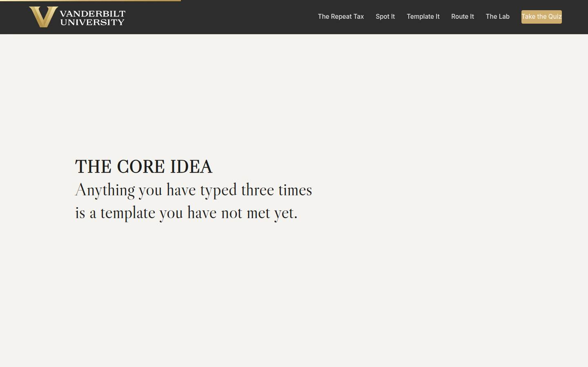
Manifesto Full 1 min · Core skip
One beat of stillness to lock the session's core idea before the method arrives.
Say
“Anything you have typed three times is a template you have not met yet.”
Do
- Let the line animate word by word. Say nothing until it finishes.
- Read it once, slowly, then advance.
Validate: None; this is pacing.
Watch for: The urge to talk over it. Don't.
Transition: “So the first move is learning to notice. Most repeats hide in plain sight.”
Core path: Core: skip; say the line yourself as you pass it.
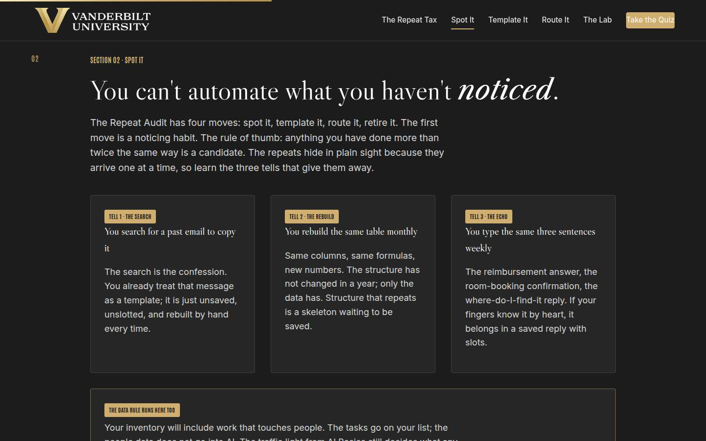
02 · Spot it Full 12 min · Core 8
Teach the recurrence inventory (the audit's first move), install the three tells and the more-than-twice rule, restate the traffic light as the boundary, and get every learner a ranked top-three list of their own automation candidates.
Say
“You can't automate what you haven't noticed, and repeats are genuinely hard to notice because they arrive one at a time, each wearing a fresh date. So use the three tells. You search for a past email so you can copy it: that search is a confession, you already treat the message as a template. You rebuild the same table every month: same columns, new numbers, the structure is begging to be saved. You type the same three sentences every week: your fingers know them by heart. The rule of thumb: anything you've done more than twice the same way is a candidate. One boundary before you start collecting: the traffic light from Start Smarter still runs. Your tasks go on the list; private information about people never goes into an AI tool, and a name baked into a template is a red flag twice over. Now build your inventory, privately: the message, the report, the request.”
Do
- Walk the three tell cards: the search, the rebuild, the echo. Ask for a show of hands on each; every hand is a candidate found.
- Walk the traffic light card and be unambiguous: green public, yellow internal in approved VU tools only, red private information about people, never. Names in templates are red flags.
- Send them to the private inventory: three fields, the message, the report, the request. Repeat the privacy line before they type.
- Give the inventory quiet time; the third field (the request you always answer the same way) usually needs the longest think.
- Have them build the ranked output, then run the pair swap from Go deeper: task names only, the two payoff questions, best candidate to the room.
Ask
“From the swap: what was the best candidate you heard, and what made it good?”
Expect:
- High-frequency messages: confirmations, standard answers, weekly updates
- Monthly report rebuilds with unchanged structure
- Someone heard a candidate better than any of their own and says so
Respond: Name the pattern: 'Notice every good candidate has the same two properties: often, and identical. Frequency times sameness is the whole ranking rule, and your number one is the task you'll carry through the rest of today.'
Debrief: Everyone now owns a ranked list and a starred first candidate. The tax has names on it, which means it can be collected.
Validate: Every learner has a ranked top-three list with a starred first candidate. The room can state the more-than-twice rule and the traffic light unprompted. This list feeds sections 03, 05, and the capstone.
Watch for: Two drifts: people typing message contents instead of task names (redirect to the task level), and the 'I have no repeats' learner. For the second, ask what they did first thing Monday morning; a repeat usually appears within three questions.
Transition: “Your number one candidate becomes a template in the next ten minutes.”
Core path: Core: tells fast with hands, traffic light at full strength, inventory stays at full length with its quiet time protected; the pair swap drops to an optional 90 seconds.
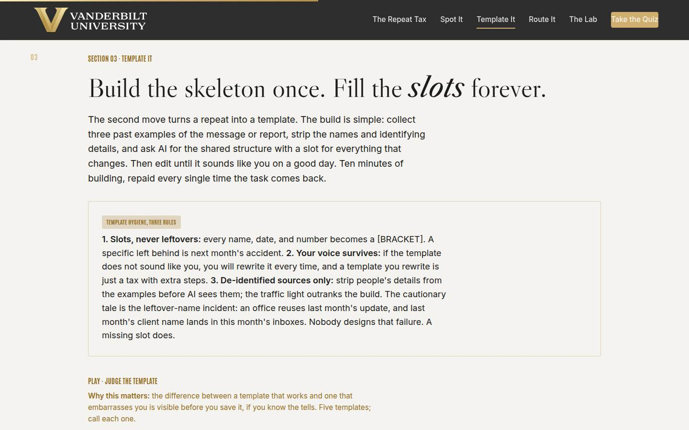
03 · Template it Full 11 min · Core 8
Install the template build (three de-identified past examples in, slotted skeleton out, voice intact) and the three hygiene rules, with the leftover-name incident as the cautionary tale that makes slot discipline stick.
Say
“The build takes one sitting. Collect three past examples of your most-repeated message. Strip every name, date, and personal detail first; the stripped versions are the only ones AI ever sees. Then one sentence: here are three examples of a message I send often, give me the reusable structure with bracketed slots for everything that changes. Edit what comes back until it sounds like you on a good day. Three rules keep the template honest. Slots, never leftovers: everything specific becomes a bracket. Your voice survives: a template you always rewrite is just the tax with extra steps. And de-identified sources only, because the traffic light outranks the build. Here's the cautionary tale, and it happens somewhere every month: an office reuses last month's update, nobody catches the un-slotted client name, and last month's client lands in this month's inboxes. Nobody designs that failure. A missing slot does.”
Do
- Walk the build in one breath: three past examples, strip the names, ask AI for the structure with slots, edit for voice.
- Walk the hygiene card slowly; the three rules are the section. Tell the leftover-name incident like the small horror story it is.
- Send them to Judge the Template: five templates, call each one. The Marcus item lands the whole section.
- Debrief the game by asking which item fooled people; it's usually the 'same as last quarter' one.
- Run the pair drill from Go deeper: slot a real message out loud, bracket by bracket, and test it with the could-it-ship-next-month question.
Ask
“Which of the five templates in the game fooled you, and what was the tell you missed?”
Expect:
- The 'same as last quarter' one: it feels reusable and has Dana and the date baked in
- The polite generic one: it reads professionally and says nothing
- Someone defends the Marcus template as 'fine for now', which is the exact trap
Respond: For the 'fine for now' defense: 'It IS fine, right up until the month it isn't, and you won't be looking that month. Slot hygiene is cheap exactly once, at save time. That's the whole argument for doing it now.'
Debrief: Skeleton once, slots forever, voice intact, and nothing specific left behind. Your number-one candidate now has a build plan.
Validate: 4+ of 5 on the trainer for most of the room; pair skeletons pass the ship-next-month test; the room can recite the three hygiene rules.
Watch for: The voice objection ('templates sound robotic'). Agree with the instinct: the too-generic trainer items ARE robotic, and the fix is rule two, your voice survives. The template is their own writing, distilled.
Transition: “Templates handle what you produce. Now the inbox and the calendar: what arrives.”
Core path: Core: build and hygiene at full strength, trainer on devices; the pair slotting becomes a solo pass on your own number-one candidate.
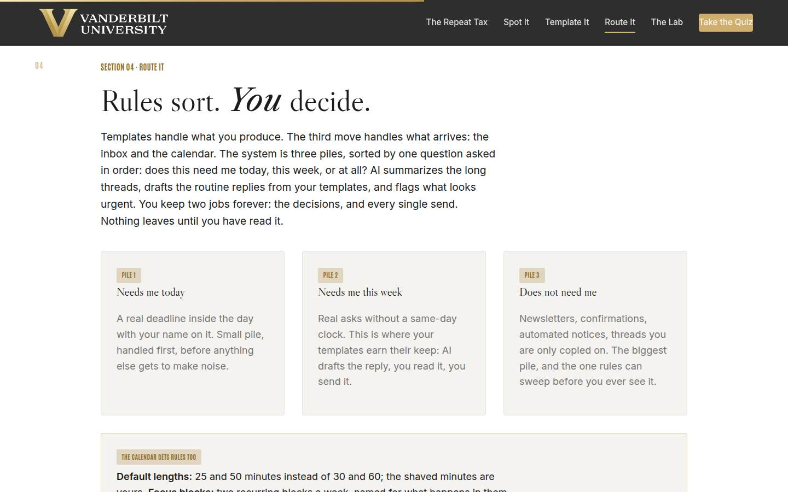
04 · Route it Full 12 min · Core 7
Install the three-pile triage system with the accountability line (rules sort, AI drafts, you decide, read-then-send without exceptions) and the three calendar rules that give recovered time somewhere to live.
Say
“Now the direction you don't control: what arrives. The system is three piles, and you sort with one question asked in order: does this need me today, this week, or at all? Pile one is a real deadline inside the day with your name on it; it's small, and it goes first. Pile two is real asks without a same-day clock, and it's where your templates earn their keep: AI drafts the reply from your template, you read it, you send it. Pile three is everything that never needed you: newsletters, confirmations, threads you're copied on. It's the biggest pile, and rules can sweep it before you ever see it. AI gets three jobs in this system: sort, summarize, draft. You keep two, forever: the decisions, and every single send. Nothing leaves until you've read it, and that rule keeps no exceptions on busy days, because busy days are when the leftover slot ships. The calendar gets rules too: 25 and 50 minute defaults, two named focus blocks, and a saved two-sentence decline template, because declining gets easy exactly when you no longer have to compose it.”
Do
- Walk the three pile cards in order; stress that the sorting question is asked in order: today, this week, at all?
- Name AI's three jobs (sort, summarize, draft) and your two jobs (decide, send). Say the accountability line twice.
- Walk the calendar card: default lengths, focus blocks, the decline template. The decline template usually gets a laugh; let it, then point out it's a template like any other.
- Send them to Triage the Inbox: five items, pick the pile.
- Run the quick check (which job is never AI's), then the pair drill: sort this morning's real mail out loud.
Ask
“From your own last ten emails: how many were pile three, and what single rule would have swept them?”
Expect:
- Counts of four to seven out of ten, said with mild disbelief
- Rules name themselves: 'anything from the notifications address', 'newsletters to a folder'
- Someone asks if sweeping is rude; they worry about missing something
Respond: For the worrier: 'The weekly ten-minute scan of the swept folder is your safety net, and it catches the rare miss at a fraction of the cost. You're not deleting anything; you're deciding when it gets your attention instead of letting it decide.'
Debrief: Rules sort, AI drafts, you decide, and nothing sends without your eyes. The inbox and calendar now have a design instead of a default.
Validate: 4+ of 5 on the trainer; the quick check lands; the room can say the accountability line unprompted and count how much of their own mail is pile three.
Watch for: The learner who wants pile-one everything ('it's all urgent'). The partner challenge in the drill is the fix: what is the actual deadline? Also watch for inbox shame; normalize it, the system is for exactly the inboxes people are embarrassed about.
Transition: “Time to pressure-test everything. You have a monthly report cycle to rebuild.”
Core path: Core: piles and calendar rules at full strength, trainer on devices, quick check stays; the pair sort becomes a solo pass on your own last ten emails.
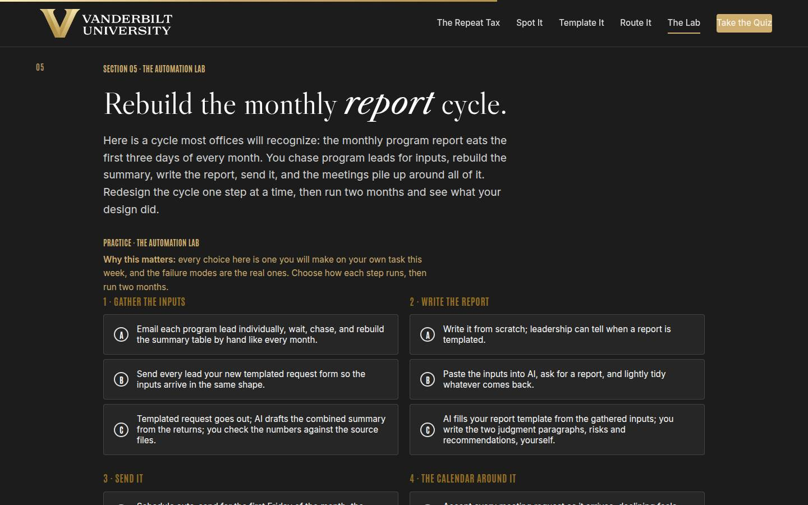
05 · The Automation Lab Full 14 min · Core 10
Give every learner a full felt rep of the method: four steps of a recognizable monthly report cycle, one design choice each, and a month-two outcome that rewards accountable design over raw automation enthusiasm. The session's deepest practice block.
Say
“Here's a cycle most of you will recognize: the monthly program report. It eats the first three days of every month. You chase program leads for inputs, rebuild the summary table, write the report, send it, and the meetings crowd in around all of it. You're going to rebuild it step by step: gather, write, send, calendar. For each one, pick how it runs. Then the lab runs two months and shows you what your design did. One warning from everything we've covered: watch where this punishes you. It is never for automating too much. It is always for taking your eyes off the send, or leaving the recovered time undefended.”
Do
- Set the scenario in one breath: the monthly program report eats the first three days of the month, four steps, rebuild it.
- Send them into the lab on devices: choose how each step runs, then run two months.
- Let people get their outcome individually; the mid and weak tiers teach more than the strong one, so don't coach choices in advance.
- Ask for a show of hands by tier: who got the strong month two, who got the auto-send disaster. Have one weak-tier learner read their coach notes aloud; the room learns from the postmortem.
- Push the rerun: strengthen your weakest step and run it again. The delta between runs is the lesson.
- Then the pair drill: design the four steps of your own starred candidate and hunt the weak step.
Ask
“For those who hit the mid or weak tier: which single choice cost you the month, and do you run that choice in real life today?”
Expect:
- The auto-send: it felt efficient right up until the stale numbers shipped
- The skim-then-send: 'the template has been right for months' fooled them
- An honest 'my real calendar is the accept-everything option'
Respond: Treat the honest answers as the room's win: 'That recognition is the whole lab. The weak options aren't hypothetical; they're how most people run their actual week. You now know the three fixes: the template, the read, the rule.'
Debrief: The lab's scoring is the course's thesis in miniature: the win comes from templates plus rules plus your eyes on every send, and month two is when unread sends and undefended calendars come due. Your own candidate's weak step now has a name.
Validate: Every learner completes at least one lab run; most reach the strong tier on a rerun; every learner can name their own candidate's weak step and the rule that fixes it.
Watch for: Learners who pick the maximal option everywhere without reading the coaching. The question that re-engages them: 'which of these choices would you actually keep doing in week six, when nobody's watching?' Also watch clock discipline; this section has the least slack.
Transition: “One move left, and it's the bravest one: deciding what should stop entirely.”
Core path: Core: one lab run instead of run-plus-rerun (rerun only for learners who hit weak tier), tier hands stay, the pair drill becomes a solo weak-step hunt. This is the floor; never cut the lab entirely.
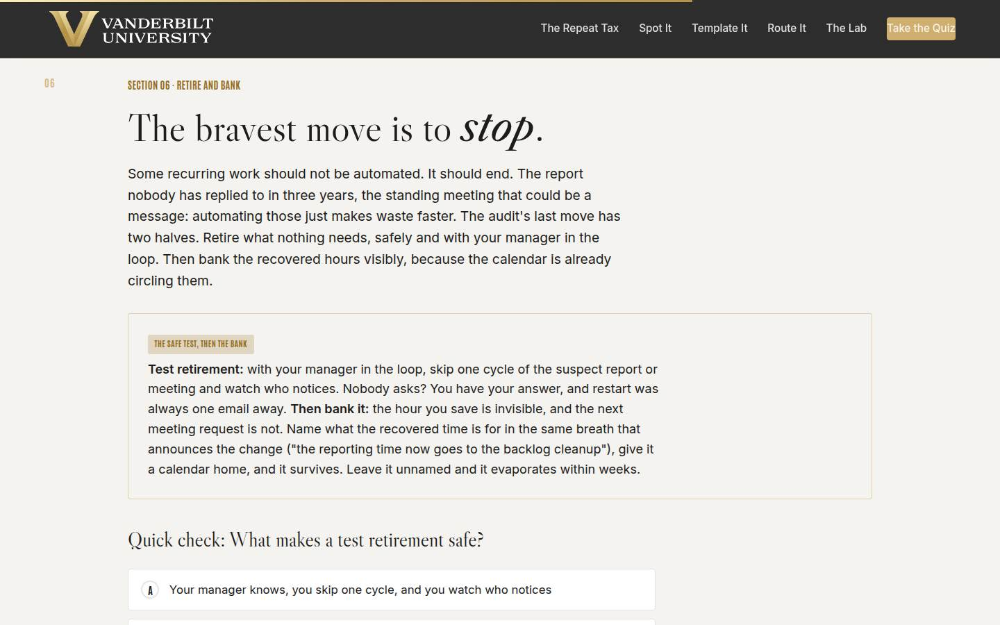
06 · Retire it and bank it Full 10 min · Core 7
Install the test retirement (skip one cycle, manager in the loop, watch who notices) and visible banking (name the hour's purpose, give it a calendar home), the two halves of the audit's final move.
Say
“The bravest move in the audit has nothing to do with AI. Some recurring work should simply stop. The monthly report nobody has replied to in three years. The hour-long meeting that could be a two-minute message. Automating those just makes the waste faster. Here's how you find out safely: with your manager in the loop, skip one cycle and watch who notices. Nobody asks? You have your answer, and restart was always one email away. Someone does ask? Even better: you just found the real audience, and the report usually shrinks to the one section they actually wanted. Then the second half, and it's the one Leadership Circle warns about: bank the hours. The hour you save is invisible; the next meeting request is not. Name what the recovered time is for, out loud, in the same breath: the reporting time now goes to the backlog cleanup. Give it a calendar home the same day. A named hour is defensible. A vague one is already gone.”
Do
- Land the reframe first: some recurring work should not be automated, it should end. Automating waste just makes waste faster.
- Walk the safe-test card: manager in the loop, one skipped cycle, restart one email away. Then the bank: name the purpose in the same breath, calendar home the same day.
- Run the quick check (what makes a test retirement safe).
- Send them to Keep, Shrink, or Retire: five obligations, make the call.
- Run the group drill: suspect obligations named out loud, sorted, and the test-retire asks drafted on the spot.
Ask
“What is the recovered hour FOR, on your calendar, by name? Say the sentence.”
Expect:
- Real answers: the backlog project, the documentation, actual lunch
- Vague answers: 'catching up', which is evaporation wearing a nicer coat
- An honest 'I don't know yet', usually from the busiest person in the room
Respond: Push past the vague ones warmly: 'Catching up is what the meetings will call it too. Name work that would make you proud in your next check-in, and give it the calendar slot. If you can't name it yet, that's your homework before the build session.'
Debrief: Retire what nothing needs, and give every recovered hour a name and a home. That's the difference between this course saving you time and this course having felt nice.
Validate: 4+ of 5 on the trainer; the quick check lands; every learner leaves with one suspect obligation named and, for test-retires, a drafted two-sentence manager ask.
Watch for: Fear around the retirement conversation ('I can't just stop doing my job'). Reframe: the test is proposed WITH the manager, framed as an experiment, and managers say yes to experiments. Also guard the keep pile: one-on-ones and required compliance never go in the test.
Transition: “That's the full audit. Quiz first, then the card that puts a date on it.”
Core path: Core: safe test and bank at full strength, quick check and trainer on devices; the group drill becomes a solo pass: name your suspect item and draft the ask.
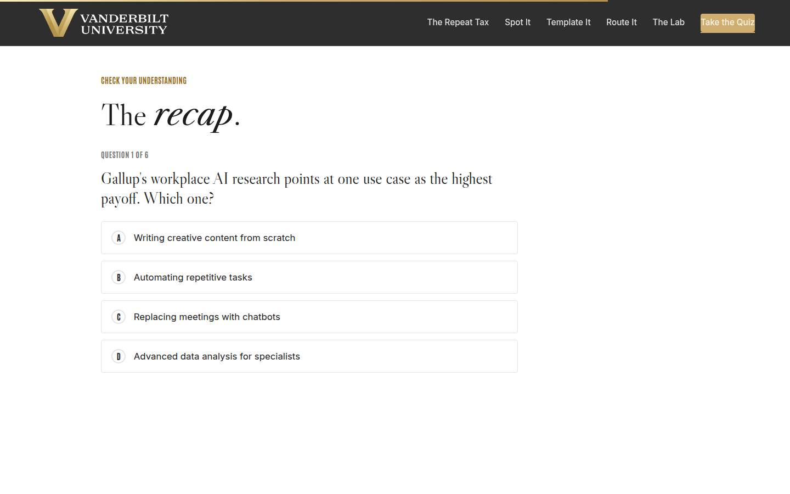
Recap quiz Full 4 min · Core 4
Score the session's knowledge against the five objectives before the capstone applies it (Kirkpatrick Level 2).
Say
“Six questions, one per big idea. This is the systems check before you write the card that leaves the room with you.”
Do
- Everyone takes it on their own device, all six questions.
- Ask for hands on 5-or-better; celebrate briefly.
- For any question the room visibly missed, do a 30-second reteach from the relevant slide, not a lecture.
Validate: Room mode at 5/6 or better. The quiz maps onto the objectives, so misses tell you exactly what to reteach.
Watch for: Racing. Frame it as the systems check before the card, not a race.
Transition: “Now the only part of today that changes anything.”
Core path: Core: keep at full length; this is the objectives' evidence.
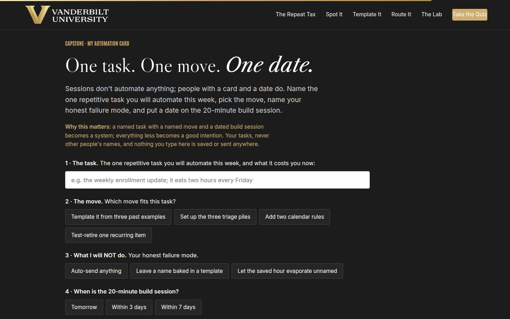
Capstone · My automation card Full 6 min · Core 6
Convert the session into one dated commitment: one task, one move, one named failure mode to avoid, and a dated 20-minute build session, with the bank named on the card. The transfer artifact and the Level 3 seed.
Say
“Sessions don't automate anything. People with a card and a date do. Pick the task, your starred candidate, with what it really costs you. Pick the move: template it, set up the piles, add the calendar rules, or test-retire it. Then the honest field: what you will NOT do, because you already know your failure mode. Auto-sending. Leaving a name baked in. Letting the hour evaporate unnamed. And the date: when are the 20 quiet minutes of the build session? A named task with a named move and a dated build session is a system. Everything less is a good intention.”
Do
- Frame it: sessions don't automate anything; people with a card and a date do.
- Repeat the privacy norm before anyone types: your tasks, nothing saved or sent.
- Give quiet time; this is individual work. Circulate for stuck learners: the starred candidate from section 02 is the task, and its tell usually picks the move.
- Point at field 3, what you will NOT do, as the honest one: everyone in the room has one of these three failure modes.
- Push the build moment, then point at the bank row on the card: the recovered time needs a name and a calendar home.
Ask
“What's most likely to make you skip the build session, and what's your plan for that obstacle?”
Expect:
- No time; the week will eat it
- Uncertainty about the tools ('I don't know where to start technically')
- Perfectionism: wanting to design the whole system before starting one template
Respond: No time: 'It's 20 minutes against a task that costs you hours monthly; the math forgives you exactly once.' Tools: 'Start in any approved VU tool with three old emails; the ask is one sentence, and the cheat sheet has it.' Perfectionism: 'One template, shipped and used, beats a system designed and imaginary. The card says one task on purpose.'
Debrief: One task each, one move each, one date each, and the bank named on the card. That's the tax refund, scheduled.
Validate: Every learner builds a card (all four fields). The card plus the 7-day pulse plus the 30-day re-poll is the evidence chain.
Watch for: Grand cards ('automate my whole inbox and calendar this week'). Push to ONE task with a real cost. And date-dodging: a build session 'soon' is not a commitment; help them pick the actual day on the spot.
Transition: “Reference shelf in one breath, and then the send-off.”
Core path: Core: protect at full length; never cut the capstone.
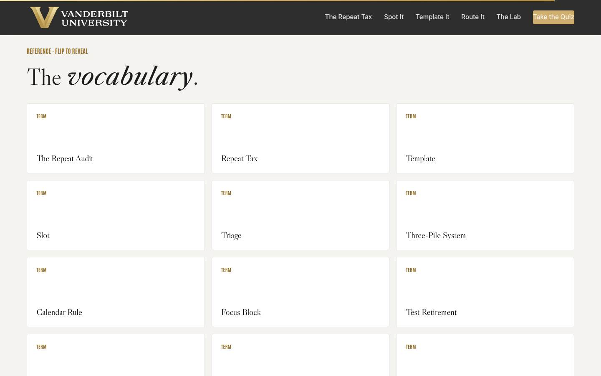
Glossary Full 1 min · Core skip
Signpost the reference layer; it lives here for after the session.
Say
“Every term from today lives here as flip cards, including the leftover-name incident, for the next time someone forwards you a template with somebody's name still in it.”
Do
- Flip one card on the projector (The Leftover-Name Incident is a good pick; it gets a knowing laugh and reteaches section 03).
- Tell them it's all here whenever they need the vocabulary back.
Validate: None; reference material.
Watch for: Don't tour all twelve cards; one flip makes the point.
Transition: “Last slide. One build session left.”
Core path: Core: skip; point at it verbally from the closing slide.
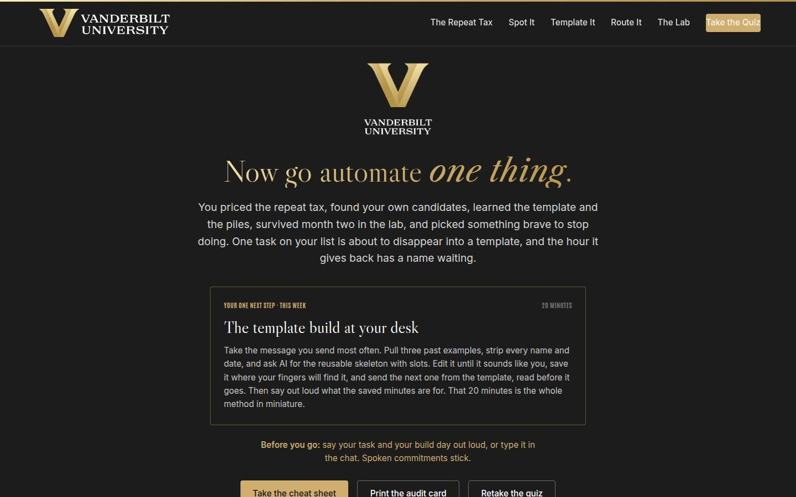
Closing · commitment Full 4 min · Core 1
Convert cards into spoken commitments, capture the Level 1 reaction check, and point at the follow-up chain.
Say
“The whole session in one breath: the research says the repetitive layer is where AI pays, the audit finds yours, templates and piles and rules collect the refund, your eyes on every send keep it honest, and the bank keeps the hours from evaporating. You have a card. Before you go: your task, and your build day. Say it out loud; spoken commitments stick.”
Do
- Read the featured card: the one next step is the 20-minute template build at your desk, this week.
- Run the fist-to-five (Level 1): 'On a fist to five, how confident are you that you can run the build session and keep the hour you recover?' Scan and note the number; the 30-day re-poll asks it again.
- Run the commitment round, popcorn style: task and build day, out loud or in chat.
- Point at the cheat sheet and audit card buttons; the cheat sheet is built to sit next to a keyboard during the build.
- Tell them the 7-day pulse is coming, then land the last line and stop on time.
Ask
“Around the room, one line each: your task, and your build day.”
Expect:
- 'The weekly status update, Thursday'
- 'The reimbursement answer, tomorrow morning'
- Someone commits to the retirement test instead, naming the report
Respond: Thank each one, no commentary. For the retirement tester, warmly: 'Good pick. Send the two-sentence ask this week, and enjoy watching who notices.'
Debrief: The session's success metric isn't in this room; it's the 7-day pulse: how many build sessions actually ran, and whether the recovered hours still have their names on the calendar.
Validate: Fist-to-five mostly 3+ (Level 1); a majority state a task and a day out loud or in chat. Count both; with the pulse and the 30-day re-poll, that's your evidence chain.
Watch for: Cards that quietly skipped the date. The commitment round catches them: no day, no commitment; help them pick one on the spot.
Transition: “Go book the 20 minutes. And when the template sends its first message and nobody can tell, that quiet is the sound of the tax refund arriving.”
Core path: Core: fist-to-five plus a fast commitment round; the ending survives every cut.
Generated from facilitator/notes.json. The on-screen facilitator edition lives at ./ alongside this guide.